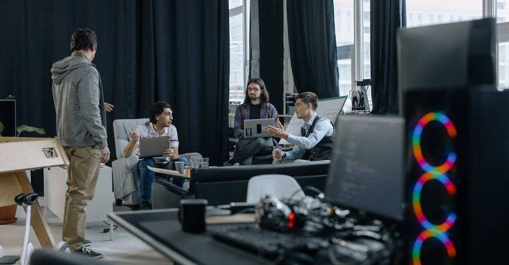
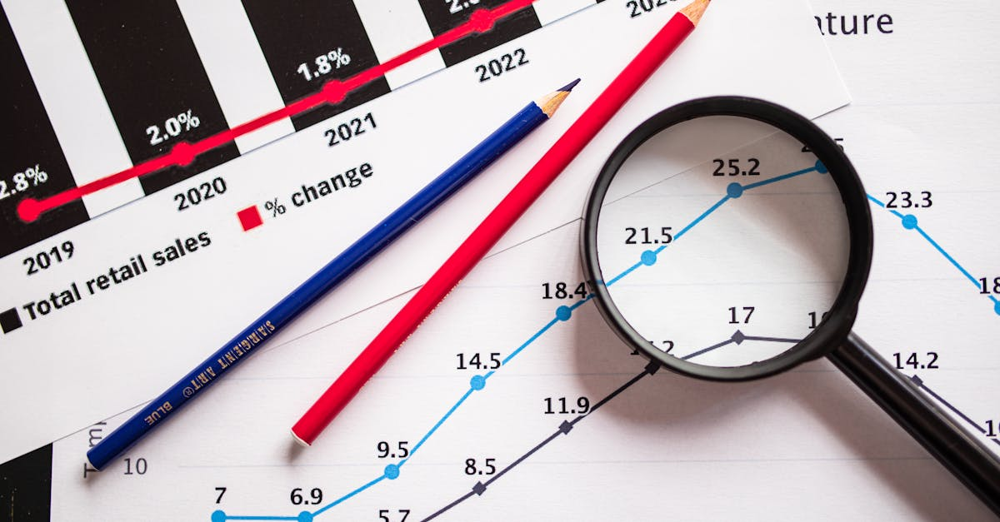

L'ascension fulgurante de Slash : une nouvelle ère pour la fintech
Le monde de la finance connaît une transformation radicale, propulsée par l'innovation technologique et l'intelligence artificielle. Dans ce paysage en constante évolution, une jeune startup nommée Slash Financial Inc., fondée par deux jeunes entrepreneurs de 24 ans, a récemment fait sensation en levant des fonds à une valorisation impressionnante de 1,4 milliard de dollars. Cette prouesse, réalisée dans un laps de temps remarquablement court, témoigne de la confiance des investisseurs dans la vision audacieuse de Slash : bousculer les acteurs établis du secteur des services financiers aux entreprises, tels que Ramp Inc. et Brex. L'histoire de Slash n'est pas seulement celle d'une levée de fonds record ; c'est le récit d'une génération qui redéfinit les règles du jeu, exploitant la puissance de l'IA pour créer des solutions financières plus agiles, personnalisées et efficaces. Leur approche disruptive, centrée sur l'optimisation des flux financiers et la simplification des processus pour les entreprises, attire l'attention des observateurs et des concurrents. Il est clair que l'intelligence artificielle n'est plus une technologie d'avenir, mais un levier stratégique immédiat pour les entreprises souhaitant rester compétitives. La capacité de Slash à anticiper les besoins du marché et à y répondre avec des outils basés sur l'IA est un indicateur fort de la direction que prendra l'épargne et l'investissement intelligents dans les années à venir. Cet article explorera en profondeur les fondements de ce succès, les technologies sous-jacentes et les implications pour l'avenir de la gestion financière, tant pour les entreprises que pour les particuliers avisés cherchant à optimiser leur propre patrimoine.

La recette du succès : Jeunesse, Vision et IA
Le succès fulgurant de Slash repose sur une combinaison de facteurs clés. D'abord, la jeunesse et l'énergie de ses fondateurs, qui apportent une perspective fraîche et une compréhension intuitive des besoins des nouvelles générations d'entrepreneurs et de professionnels. Contrairement aux structures traditionnelles, Slash semble avoir adopté une approche agile, capable de pivoter rapidement et d'innover sans être freinée par des processus rigides. Ensuite, leur vision stratégique est claire : s'attaquer à un marché dominé par des acteurs bien établis en offrant une proposition de valeur différenciée. Là où Ramp et Brex ont déjà tracé un chemin, Slash semble vouloir aller plus loin, en intégrant l'IA de manière plus profonde et plus omniprésente dans ses services. L'intelligence artificielle n'est pas ici un simple ajout marketing, mais le cœur technologique de leur offre. Elle permet d'automatiser des tâches complexes, d'analyser des volumes massifs de données financières pour en extraire des insights précieux, et de proposer des recommandations personnalisées en temps réel. Pensez à une optimisation continue des dépenses, une gestion proactive des flux de trésorerie, ou encore une détection précoce des risques financiers. Cette capacité à transformer les données brutes en actions intelligentes est ce qui séduit les investisseurs comme Khosla Ventures et Ribbit Capital, des noms reconnus pour leur flair dans le financement de sociétés technologiques à fort potentiel. Pour les particuliers également, cette tendance souligne l'importance croissante des outils automatisés pour la gestion de l'épargne et des investissements. L'idée d'un agent IA capable d'optimiser nos placements 24h/24, comme le propose Epargne IA, devient de plus en plus concrète et désirable.
Au-delà des cartes de crédit : une plateforme financière intégrée
La comparaison avec des géants comme Ramp et Brex, qui ont initialement bâti leur réputation sur des cartes de crédit d'entreprise innovantes, suggère que Slash vise une offre bien plus complète. Si les cartes d'entreprise restent un produit d'appel attractif, la véritable ambition de Slash semble être de construire une plateforme financière intégrée. Cela pourrait inclure la gestion des dépenses, la comptabilité, la facturation, les paiements, et surtout, des outils d'analyse et d'optimisation basés sur l'IA. L'objectif est de devenir le copilote financier de l'entreprise, automatisant non seulement les tâches administratives répétitives mais aussi les décisions stratégiques. Imaginez un système qui apprend des habitudes de dépenses de votre entreprise, identifie les opportunités d'économies, négocie de meilleurs tarifs avec les fournisseurs, et optimise même la structure de financement. C'est le genre de promesse que l'IA peut tenir. Cette approche holistique est particulièrement pertinente dans le contexte actuel où la gestion rigoureuse des finances est cruciale pour la survie et la croissance des entreprises, en particulier les PME et les startups. La capacité de Slash à fournir une vue unifiée et intelligente des finances d'une entreprise, accessible via une interface intuitive, représente un avantage concurrentiel majeur. Pour ceux qui cherchent à appliquer des principes similaires à leur épargne personnelle, l'idée d'une plateforme qui agrège et optimise les différents comptes et investissements grâce à l'IA prend tout son sens. L'automatisation intelligente devient ainsi un outil puissant pour maximiser le rendement et minimiser les risques, une philosophie que des acteurs comme Epargne IA cherchent à démocratiser.

L'IA au service de la performance : comment Slash innove
L'intelligence artificielle est au cœur de la stratégie de Slash. Il ne s'agit pas seulement d'utiliser des algorithmes pour traiter des transactions, mais d'exploiter des techniques avancées comme l'apprentissage automatique (machine learning) et le traitement du langage naturel (NLP) pour offrir des fonctionnalités inédites. Voici quelques exemples concrets de la manière dont l'IA peut être appliquée :
- Optimisation des flux de trésorerie : L'IA peut analyser les schémas de revenus et de dépenses pour prédire les besoins de trésorerie futurs, suggérer des stratégies de financement optimales et identifier les moments opportuns pour investir ou rembourser des dettes.
- Automatisation de la comptabilité : En analysant automatiquement les factures, les reçus et les relevés bancaires, l'IA peut catégoriser les transactions, générer des rapports financiers précis et détecter les erreurs ou les fraudes potentielles.
- Analyse prédictive des dépenses : L'IA peut identifier les tendances de dépenses, comparer les coûts avec des benchmarks sectoriels et proposer des pistes d'économies, par exemple en suggérant des fournisseurs alternatifs ou des plans tarifaires plus avantageux.
- Gestion intelligente des paiements : Automatisation des paiements aux fournisseurs en fonction des dates d'échéance, des conditions de paiement et de la disponibilité des fonds, tout en optimisant les éventuelles remises.
- Recommandations personnalisées : Basées sur l'historique et les objectifs de l'entreprise, l'IA peut suggérer des produits financiers adaptés, des stratégies d'investissement ou des mesures pour améliorer la santé financière globale.
Cette intégration profonde de l'IA permet à Slash de proposer une valeur ajoutée significative par rapport aux solutions financières traditionnelles. Elle libère du temps précieux pour les équipes, réduit les coûts opérationnels et permet une prise de décision plus éclairée et proactive. Pour les investisseurs individuels, ces mêmes principes d'optimisation et d'analyse prédictive, appliqués à l'épargne et aux portefeuilles d'investissement, ouvrent la voie à une gestion plus performante et moins stressante, un domaine où l'expertise d'un agent IA dédié prend tout son sens.
Les investisseurs misent sur l'avenir : la confiance dans l'IA
La valorisation à 1,4 milliard de dollars de Slash n'est pas tombée du ciel. Elle est le reflet de la confiance des investisseurs, notamment de figures de proue comme Khosla Ventures et Ribbit Capital, dans le potentiel disruptif de l'entreprise et, plus largement, dans l'impact transformateur de l'intelligence artificielle sur le secteur financier. Ces fonds d'investissement sont réputés pour leur capacité à identifier les tendances émergentes et à soutenir les entreprises qui redéfinissent leur industrie. Leur engagement auprès de Slash valide non seulement le modèle économique de la startup, mais aussi sa technologie et son équipe. Pour les observateurs du monde de la finance, cette valorisation élevée souligne plusieurs points importants :
- Le potentiel de croissance du marché : Le secteur des services financiers aux entreprises, en particulier pour les PME et les startups, est vaste et encore largement ouvert à l'innovation.
- La demande pour des solutions automatisées : Les entreprises recherchent activement des outils qui simplifient la gestion financière, réduisent les coûts et améliorent l'efficacité.
- La puissance de l'IA comme différenciateur : L'intégration poussée de l'IA est perçue comme un avantage concurrentiel décisif, capable de créer des solutions supérieures aux offres existantes.
- L'attrait pour les équipes fondatrices audacieuses : Les investisseurs sont prêts à parier sur de jeunes entrepreneurs visionnaires, surtout lorsqu'ils s'attaquent à des marchés importants avec une technologie de pointe.
Cette validation par des investisseurs de renom est un signal fort pour l'ensemble de l'écosystème fintech. Elle confirme que l'IA n'est pas seulement un mot à la mode, mais un véritable moteur de création de valeur. Pour ceux qui s'intéressent à l'optimisation de leur épargne, cela renforce l'idée que des solutions d'investissement automatisées par IA, capables d'analyser les marchés et d'ajuster les stratégies en continu, sont non seulement possibles mais probablement l'avenir de la gestion de patrimoine.

Implications pour l'épargne intelligente et l'investissement automatisé
L'histoire de Slash, bien que centrée sur les entreprises, a des répercussions significatives pour le domaine de l'épargne intelligente et de l'investissement automatisé par IA, un créneau qu'Epargne IA explore activement. La validation de modèles économiques basés sur l'IA à une telle échelle montre que les investisseurs sont prêts à financer des technologies qui promettent efficacité, optimisation et intelligence. Pour l'investisseur particulier, cela se traduit par une confiance accrue dans les solutions d'épargne et de placement automatisées. L'idée qu'un agent IA puisse analyser les marchés 24h/24, identifier les opportunités, gérer les risques et ajuster un portefeuille en fonction d'objectifs prédéfinis devient de plus en plus crédible et réalisable. Les principes qui sous-tendent le succès de Slash – analyse de données à grande échelle, automatisation des processus complexes, personnalisation des recommandations – sont directement applicables à la gestion de patrimoine personnelle. Un agent IA peut :
- Analyser en continu les fluctuations des marchés financiers mondiaux.
- Identifier des actifs sous-évalués ou des tendances émergentes avant la plupart des investisseurs humains.
- Gérer la diversification du portefeuille pour minimiser les risques tout en maximisant le potentiel de rendement.
- Rééquilibrer automatiquement le portefeuille en fonction des conditions de marché et des objectifs de l'investisseur (par exemple, horizon de placement, tolérance au risque).
- Fournir des rapports clairs et des insights sur la performance, expliquant les décisions prises par l'IA.
L'essor de startups comme Slash confirme que l'IA est un levier puissant pour l'efficacité financière. Il est donc logique de s'attendre à voir émerger et se développer davantage d'outils basés sur l'IA pour aider les particuliers à optimiser leur épargne et leurs investissements, rendant la gestion financière plus accessible, plus performante et moins anxiogène.
Conclusion : L'IA, futur incontournable de la finance ?
La valorisation spectaculaire de Slash à 1,4 milliard de dollars est bien plus qu'une simple nouvelle financière. C'est un témoignage puissant de la révolution que l'intelligence artificielle est en train d'opérer dans le secteur financier. En s'appuyant sur des fondations technologiques solides et une vision audacieuse, cette jeune startup démontre qu'il est possible de défier les acteurs établis et de redéfinir les standards du marché. L'approche de Slash, qui consiste à intégrer l'IA au cœur de ses services pour offrir une gestion financière plus intelligente, plus automatisée et plus personnalisée aux entreprises, ouvre la voie à de nouvelles possibilités. Pour le monde de l'épargne et de l'investissement, cette tendance est une invitation à embrasser l'automatisation et l'intelligence artificielle. Des outils comme l'agent IA proposé par Epargne IA incarnent cette évolution, promettant d'aider chacun à optimiser ses finances personnelles avec une efficacité jusqu'alors inégalée. L'avenir de la finance, qu'il s'agisse de la gestion des entreprises ou de l'épargne individuelle, semble résolument tourné vers l'IA. Ceux qui sauront l'adopter et en exploiter le potentiel seront les mieux placés pour prospérer dans ce nouveau paysage financier dynamique et prometteur. La clé réside dans la capacité à transformer la puissance brute de l'IA en solutions concrètes et accessibles qui apportent une valeur ajoutée tangible.